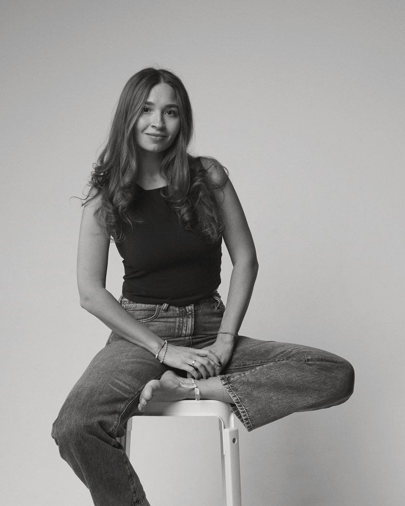

Доверительно
Все, что вы расскажете, остается между нами. Конфиденциальность – основа моей работы.
Онлайн-консультации психолога
Помогаю разобраться с тревогой, отношениями, самооценкой и работой. Бережно, без оценок и в том темпе, который подходит именно вам.
Записаться на консультациюПервая сессия-знакомство (20 минут) – бесплатно
Онлайн, из любого города. Стоимость и удобное время обсудим при записи.

Атмосфера
Главное, что я хочу создать на консультации, – спокойное место, где можно говорить честно.
Все, что вы расскажете, остается между нами. Конфиденциальность – основа моей работы.
Здесь не стыдят и не торопят. Можно говорить как есть, с любыми чувствами и сомнениями.
Мы идем в вашем темпе. Сложные темы открываем постепенно, когда вы к этому готовы.
После встречи у вас будут простые упражнения и понятный план, что делать дальше.
Запросы
Можно прийти и без четкого запроса. Разберемся вместе
Подход
Я опираюсь на когнитивно-поведенческую терапию (КПТ), а еще на схема-терапию и терапию принятия и ответственности (ACT). У этих подходов серьезная научная база. Вместе мы находим мысли и привычки, которые держат в замкнутом круге, и пробуем новые способы прямо в жизни.
Образование
В психологии с 2012 года
Факультет психологии
Запись
Напишите в двух словах, что вас беспокоит. Я отвечу и предложу время для бесплатной сессии-знакомства на 20 минут.
Написать в TelegramTelegram: @LisavetteK